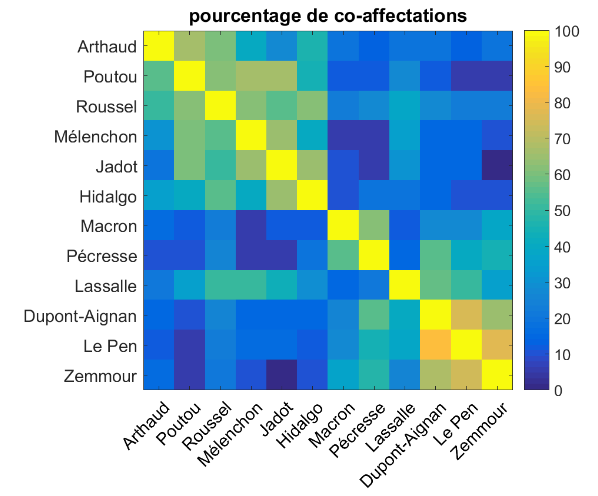

RL | Quiz électoraux 2022
Étude initiale: quiz du Figaro
C’est initialement le quiz du Figaro qui m’a inspiré cette étude. Mais il était tellement biaisé qu’une approche quantitative n’aurait pas valu la peine.
Je me suis contenté d’en faire un Tweet qui constitue une bon introduction au problème posé.
Le niveau de biais dans le questionnaire de @Le_Figaro "De quel candidat êtes-vous le plus proche?" est carrément risible.
— Romain Ligneul 🛸 (@nerfsocial) April 1, 2022
Méthode: 0/20. Honnêteté: ?/20.
A suivre, une analyse du questionnaire proposé par @lemondefr qui est foireux lui aussi quoique de façon plus subtile. pic.twitter.com/BZTUizQENo
Étude qualitative des items: quiz du Monde
Avant de commencer à coder mais en sachant déjà quelles réponses étaient associées à quels candidats, j’ai analysé attentivement les différents items et j’ai rapporté un certain nombre d’anomalie dans cet autre thread Twitter.
En principe, les quiz électoraux pourraient être utiles à la démocratie. Mais en pratique, ils induisent en erreur en donnant un faux sentiment d'objectivité.
— Romain Ligneul 🛸 (@nerfsocial) April 1, 2022
Dans ce thread j'analyse en détail l'outil proposé par @lemondefr.
Pour le code et les données 🔽https://t.co/5AbpOn2jpL
Code
Tous les scripts et toutes les données nécessaires pour reproduire cette analyse sont sur disponibles sur Github.
A noter: dans le dossier “sources” du dossier Github se trouvent également les quiz du Figaro, du Télégramme et du Parisien au format brut, extraits le 2/04, pour ceux que ça intéresserait de généraliser l’approche ci-dessous. Vous pouvez aussi télécharger le quiz du Monde dans un format Excel ici.
Malheureusement, j’ai analysé ces données avec Matlab (non open-source). Promis, tous les prochains projets utiliseront Python 😇.
Le script lemonde_analyse.m extrait les informations du quiz et simule un grand nombre de réponses aléatoires pour évaluer l’équilibre du test. Un test non-biaisé devrait aboutir à une répartition homogène des probabilités d’être classé premier d’un candidat à l’autre. Cette analyse peut se faire sur la base des 20 premières questions ou du quiz entier, en corrigeant ou non pour le nombre d’affectations possibles par candidats. Le script lemonde_plot.m crée les figures. Les barres d’erreur indiquent les intervalles de confiance à 95%.
Le but de ces analyses est de montrer qu’aucune version du quiz n’est équilibrée. Il y a deux facteurs en jeu. Premièrement, tous les candidats n’ont pas le même nombre d’affectations possibles, ce qui diminue mécaniquement le nombre de points qu’ils peuvent se voir attribuer. Deuxièmement, même lorsque l’on corrige pour le nombre d’affectations possibles par candidat (de manière à ce que chaque candidat reçoive en moyenne exactement le même nombre de points), le jeu complexe des co-affectations fait que certains candidats sont avantagés par rapport à d’autres.
Prétraitement des données
Version du quiz utilisée: https://www.lemonde.fr/les-decodeurs/article/2022/03/31/quiz-sur-la-presidentielle-2022-de-quel-candidat-etes-vous-le-plus-proche_6119971_4355770.html
Affectations par candidat
clear all
% Le quiz a été importé a partir de cette addresse sous la forme d'un
% fichier JSON
% https://assets-decodeurs.lemonde.fr/sheets/XusEdnYa3E1Jjl5VdrKGA2z9bH1uwA_887
% Ce fichier JSON a ensuite été converti au format excel/csv en utilisant
% cet outil: https://data.page/json/csv
% Puis il a été importé (à partir du fichier excel) dans matlab pour
% produire ce fichier:
quiz=importdata('sources/quizlemonde.mat')
% spécifications de l'analyse
nom_analyse='analyses';
nquestions=20;
nsimulations=10000;
correction_nquestion=true;
candidats={'Arthaud', 'Poutou','Roussel', 'Mélenchon', 'Jadot', 'Hidalgo', 'Macron', 'Pécresse', 'Lassalle', 'Dupont-Aignan', 'Le Pen', 'Zemmour'};
% prétraitement du quiz pour obtenir les affectations par candidat et par
% question.
noptions=nan(nquestions,1);
for i=1:nquestions
for a=1:6
if (iscell(quiz{i+1,9+a})==0 | isempty(cell2mat(quiz{i+1,9+a}))) & isnan(noptions(i,1))
noptions(i,1)=a-1;
end
for c=1:length(candidats)
exist_str=strfind(quiz{i+1,9+a},candidats{c});
try
if isempty(exist_str{1})==0
mat_affect(c,i)=a;
end
end
end
end
end
Calculs complémentaires
% calcule la similarité entre candidats (réception de points pour les mêmes réponses)
for c=1:length(candidats)
for cc=1:length(candidats)
coaffectation(c,cc)=(sum(mat_affect(c,mat_affect(c,:)>0)==mat_affect(cc,mat_affect(c,:)>0)))/sum(mat_affect(c,:)>0);
end
end
% correction pour le nombre de questions concernant chaque candidat
if correction_nquestion
point_correction=1./(mean(mat_affect>0,2));
else
point_correction=ones(length(candidats),1);
end
% simulation des réponses aléatoires
scores=zeros(length(candidats),nsimulations);
for s=1:nsimulations
for i=1:nquestions
choix=randi(noptions(i));
points=find(choix==mat_affect(:,i));
scores(points,s)=scores(points,s)+point_correction(points);
end
[dum, dum, invrank] = unique(scores(:,s));
rang(:,s)=1+max(invrank)-invrank;
end
% calcule des moyennes et des intervalles de confiance à 95%
for c=1:length(candidats)
proportion_premier(c,1)=mean(rang(c,:)==1);
confidence_interval(c,:)=bootci(1000,@(x) mean(x), [rang(c,:)==1]');
end
% crée le dossier si besoin
if exist('analyses', 'dir')==0
mkdir('analyses')
end
% sauvegarde les données
save(['analyses/' nom_analyse '.mat'])
% fichiers présauvegardés
% court = 20 questions: première partie du quiz
% long = 40 questions: inclusion des questions supplémentairesFigures
Initialization
% nom de l'analyse
analyse_source='analyses_court_correction';
% charge l'analyse souhaitée
load(['analyses/' analyse_source '.mat'])
% crée le dossier si besoin
if exist('figures', 'dir')==0
mkdir('figures')
end
% plot biais
f1=figure('name', 'bias', 'color', 'w', 'position', [246 328 560 645] )
% code couleur récupéré sur le site du monde
hexcolors={'#9D0D16', '#CE2929', '#F1001C', '#FF3333', '#23B73D', '#FF668B', '#FF9F0E', '#0890C5', '#617B75', '#02279C', '#8D6026','#654519'};
hm=bar([1:12]',diag(100*proportion_premier(:,1)),'stacked');
hold on
he=errorbar(1:12,100*proportion_premier,100*(proportion_premier-confidence_interval(:,1)),100*(confidence_interval(:,2)-proportion_premier));
he.LineStyle='none';
he.Color='k';
he.LineWidth=1;
hold off
for c=1:12
cartecouleur(c,:)=sscanf(hexcolors{c}(2:end),'%2x%2x%2x',[1 3])/255;
hm(c).FaceColor=cartecouleur(c,:);
hm(c).FaceAlpha=0.8;
end
xlim([0 13])
ylabel('premier ou copremier (%)')
set(gca, 'xticklabel', candidats, 'fontsize', 14)
box off
camroll(-90)
saveas(f1, ['figures/figure_' analyse_source '_biais.png'])
| Biais non-corrigé | Biais corrigé |
|---|---|
 |
|
Coaffectation et similarité
% similarité
f2=figure('color', 'w')
imagesc(100\*coaffectation)
set(gca,'xtick',1:12);
set(gca,'ytick',1:12);
set(gca,'xticklabel',candidats);
set(gca,'yticklabel',candidats, 'fontsize', 14);
xticklabel_rotate(\[\],45,\[\], 'fontsize', 14)
title('pourcentage de co-affectations')
colorbar
set(gcf, 'position', \[ 808 328 984 645\])
saveas(f2, \['figures/figure\_' analyse_source(10:end) '\_similarité.png'\])
